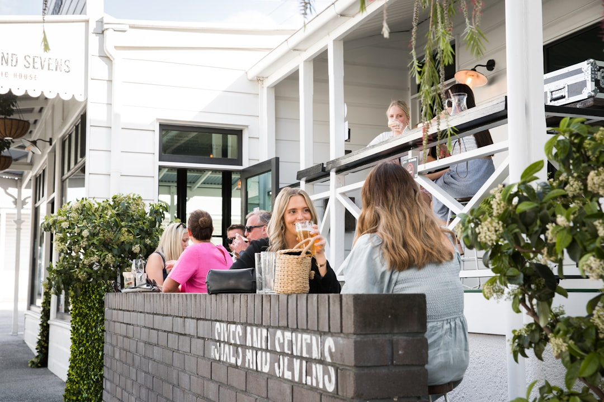

A practical Brisbane dining search starts with the directory structure already published by Best Brisbane Restaurants. The site says readers can browse 9 provider types of verified providers, compare reviews, services and pricing, and get quotes for free. Its own process is three steps, search, compare, contact. In practice, that means choosing a category first, adding location only when it affects the plan, then checking profile details before you call, email or send an enquiry.
For diners comparing restaurants brisbane options, the useful first move is to sort by dining style, then bring in suburb and profile detail only when those filters will actually change the booking decision.
Restaurants Brisbane Explained
Best Brisbane Restaurants is easiest to use when you follow its structure instead of treating it like a long unfiltered list. The home page already separates venues into Asian, Casual & Family, Fine Dining, Italian, Modern Australian, Restaurants, Seafood, Steak & Grill, and Vegetarian & Vegan. Pick the category that fits the meal first. That removes the wrong kind of venue before suburb, photos or reviews start competing for attention.
The directory also tells you what to compare, reviews, services, pricing and photos. That gives the first pass a clear job. You are not hunting for a perfect venue at this stage. You are narrowing to a few listings that match the occasion closely enough to deserve a deeper look. If you want a broader orientation before opening individual profiles, this restaurant guide for Brisbane diners is a useful companion page.
Use location after you know the type of meal
Location pages become useful once the style of dining is settled. The home page points readers to Brisbane City, Morningside, Bulimba and Newstead, and also highlights Modern Australian in Brisbane City. Those references help when the meeting point, travel time or surrounding precinct will change whether a venue is practical for the night.
A city or suburb filter works best as a second screen, not the opening one. If the plan is a central dinner, Brisbane City may narrow the list quickly. If the meal depends on where friends live or where the evening starts, a suburb page can cut out options that look good on category alone. The stronger shortlist usually comes from combining a venue type with an area, rather than browsing either filter in isolation.
Read each profile for evidence, not just inspiration
The published compare step is where most of the decision quality sits. Once a listing makes the shortlist, check the profile for the four details the site says it provides, reviews, photos, services and pricing. Each one answers a different question. Reviews help you judge consistency, photos show whether the setting fits the occasion, services tell you what the venue actually offers, and pricing helps screen out obvious mismatches before you make contact.
Featured providers on the home page show that profiles are meant to be opened and assessed, not skimmed past. Some examples display ratings and review counts on the page, which is useful as a starting signal, but not a substitute for reading the listing itself. A profile earns its place on your final list when it answers enough practical questions that the next step is a booking enquiry, not another round of browsing.
- Use photos to check whether the room and food presentation suit the occasion.
- Use services to confirm the venue fits the kind of outing you are planning.
- Use pricing detail to remove poor fits before you spend time contacting them.
Make contact with specific questions already decided
The site's final step is contact, by phone, email or a quote request through the form. That step is more useful when you have already settled the basics from the listing. If category, location and profile detail have done their job, contact becomes a confirmation exercise rather than a fishing expedition.
Go in with a short checklist. Confirm the points the profile could not settle fully, such as whether the service style shown on the page fits your group, whether the location still works for everyone attending, and whether the pricing information puts the venue in or out of range for the plan. A clear question list keeps the shortlist moving. It also makes it easier to compare two or three final options on the same basis instead of choosing the listing with the nicest first impression.
- Choose the venue type first.
- Add the area only when it affects the plan.
- Check profile detail before contacting anyone.
- Ask only the remaining booking questions.
Who this approach suits best
This process suits diners who know the shape of the meal but not the final venue. It works well for people choosing between a casual outing and a more formal dinner, for groups balancing a central meeting point against a preferred precinct, and for readers who want direct comparison instead of scattered browsing.
It is less useful if you want a single instant recommendation with no comparison at all. The directory is built for browsing verified local businesses, reviewing profile information and contacting shortlisted venues directly. Used that way, it helps turn a broad Brisbane dining search into a smaller set of realistic options that can actually be booked.
- Choose the venue type. Start with the category that matches the meal, because that removes the wrong style of listing fastest.
- Add the area. Use Brisbane City or suburb pages only when location will change whether the booking works.
- Compare the profile. Check reviews, photos, services and pricing before you decide which listings deserve contact.
- Contact the finalists. Use phone, email or the quote form to confirm the remaining practical details on your shortlist.
| Starting point | Best use | Next check |
|---|---|---|
| Category page | You know the style of meal or cuisine | Open profiles and compare reviews, photos, services and pricing |
| Location page | The area will affect whether the booking is practical | Check that the venue type still suits the occasion |
| Featured profile | You want a quick listing to assess in detail | Read the full profile before contacting the venue |
Common questions
What is the quickest way to use this directory well? Follow the published sequence. Start with search by category or location, compare reviews, photos, services and pricing, then contact only the listings that still fit after those checks.
Should location come before category? Usually no. Category is the cleaner first filter because the home page is organised around clear dining types. Location becomes more useful once the occasion is settled and the area will affect whether the booking is realistic.
What should I compare on each listing before I enquire? The site says you can compare reviews, services and pricing, and the compare step also refers to viewing photos. Taken together, those details help you judge fit before you call, email or send a quote request.
Who benefits most from this approach? It suits diners who want a shortlist rather than a single instant pick. If you need to weigh dining style, area and profile detail together, the directory structure gives you a more disciplined way to compare options.
This guide covers how to narrow Brisbane dining listings by category, location, profile detail and contact method.